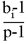

RANDOMIZE, RND
This chapter deals with the function RND and the keyword RANDOMIZE. They are both used in connection with random numbers, so you must be careful not to get them mixed up. They are both on the same key (T); RANDOMIZE has had to be abbreviated to RAND.
In some ways RND is like a function: it does calculations and produces a result. It is unusual in that it does not need an argument.
Each time you use it, its result is a new random number between 0 and 1. (Sometimes it can take the value 0, but never 1.)
Try
10 PRINT RND
20 GO TO 10
to see how the answer varies. Can you detect any pattern7 You shouldn't be able to; 'random' means that there is no pattern.
Actually, RND is not truly random, because it follows a fixed sequence of 65536 numbers. However, these are so thoroughly jumbled up that there are at least no obvious patterns and we say that RND is pseudo-random.
RND gives a random number between 0 and 1, but you can easily get random numbers in other ranges. For instance, 5*RND is between 0 and 5, and 1.3+0.7*RND is between 1.3 and 2. To get whole numbers, use INT (remembering that INT always rounds down) as in 1 +INT (RND*6), which we shall use in a program to simulate dice. RND*6 is in the range 0 to 6, but since it never actually reaches 6, INT (RND*6) is 0,1,2,3,4 or 5.
Here is the program:
10 REM dice throwing program
20 CLS
30 FOR n=1 TO 2
40 PRINT 1+INT (RND*6);" ";
50 NEXT n
60 INPUT a$: GO TO 20
Press ENTER each time you want to throw the dice.
The RANDOMIZE statement is used to make RND start off at a definite place in its sequence of numbers, as you can see with this program:
10 RANDOMIZE 1
20 FOR n=1 TO 5: PRINT RND ,: NEXT n
30 PRINT: GO TO 10
After each execution of RANDOMIZE 1, the RND sequence starts off again with 0.0022735596. You can use other numbers between 1 and 65535 in the RANDOMIZE statement to start the RND sequence off at different places.
If you had a program with RND in it and it also had some mistakes that you had not found, then it would help to use RANDOMIZE like this so that the program behaved the same way each time you ran it.
RANDOMIZE on its own (and RANDOMIZE 0 has the same effect) is different, because it really does randomize RND - you can see this in the next program.
10 RANDOMIZE
20 PRINT RND: GO TO 10
The sequence you get here is not very random, because RANDOMIZE uses the time since the computer was switched on. Since this has gone up by the same amount each time RANDOMIZE is executed, the next RND does more or less the same. You would get better randomness by replacing GO TO 10 by GO TO 20.
Note: Most dialects of BASIC use RND and RANDOMIZE to produce random numbers, but not all use them in the same way.
Here is a program to toss coins and count the numbers of heads and tails.
10 LET heads=0: LET tails=0
20 LET coin=INT (RND*2)
30 IF coin=0 THEN LET heads=heads+1
40 IF coin=1 THEN LET tails=tails+1
50 PRINT heads;",";tails,
60 IF tails<>0 THEN PRINT heads/tails;
70 PRINT : GO TO 20
The ratio of heads to tails should become approximately 1 if you go on long enough, because in the long run you expect approximately equal numbers of heads and tails.
Exercises
Test this rule:
Suppose you choose a number between 1 and 872 and type
RANDOMIZE your number
Then the next value of RND will be
(75*(your number+1) -1) /65536
Let p be a (large) prime, and let a be a primitive root modulo p.
Then if bi is the residue of ai modulo p (1 ≤ bi ≤ p-l ), the sequence

is a cyclical sequence of p-1 distinct numbers in the range 0 to 1 (excluding 1). By choosing a suitably, these can be made to look fairly random.
65537 is a Fermat prime, 216+1. Because the multiplicative group of non-zero residues modulo 65537 has a power of 2 as its order, a residue is a primitive root if and only if it is not a quadratic residue. Use Gauss' law of quadratic reciprocity to show that 75 is a primitive root modulo 65537.
The ZX Spectrum uses p=65537 and a=75, and stores some bi-1 in memory. RND entails replacing bi-1 in memory by bi+1 -1, and yielding the result (bi+1-l) (p-l). RANDOMIZE n (with 1≤n≤65535) makes bi equal to n+1.
RND is approximately uniformly distributed over the range 0 to 1.